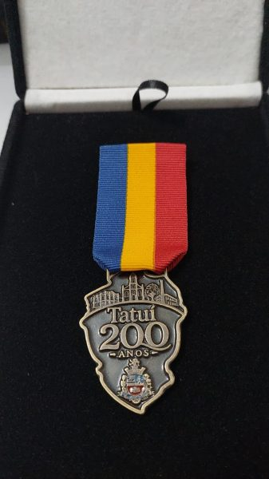

Equipes Base
Encontros periódicos de formação, espiritualidade, convivência e fortalecimento de vínculos.
O MFC de Tatuí
Pessoas e famílias que acreditam na força dos vínculos, da fé vivida, do diálogo e do serviço ao próximo.

Ser MFCista é caminhar com pessoas com quem podemos compartilhar experiências, aprender, celebrar, servir e crescer. O Movimento fortalece as famílias para que sejam formadoras de pessoas, educadoras na fé e promotoras do bem comum.
O MFC é uma associação civil, filantrópica e sem fins lucrativos, presente em diversas regiões do Brasil e integrada a um movimento familiar de alcance internacional.
Nossa missãoFortalecer famílias para transformar a comunidade.Promovemos formação, espiritualidade, convivência, diálogo e compromisso com a comunidade, incentivando cada pessoa a ser agente de transformação onde vive.
Começa a caminhada de famílias que se reúnem para viver a fé, formar-se e servir à cidade.
Uma tradição que prepara casais para o casamento e segue acontecendo até hoje.
O MFC construiu a creche, que depois foi cedida ao Município.
No primeiro Encontro de Noivos do ano foram acolhidos 27 casais de Tatuí e cidades vizinhas. A juventude também caminhou, com o MJC.
A Câmara Municipal reconheceu os serviços prestados pelo MFC ao município.
Encontros periódicos de formação, espiritualidade, convivência e fortalecimento de vínculos.
Uma longa tradição de preparação para o casamento.
Estudos, palestras, reflexões e formação de lideranças.
Missas, orações, novenas, estudos bíblicos e fé no dia a dia.
Espaço de participação para as novas gerações, com o MJC, e apoio a pessoas, famílias e comunidades.
Em 2026, o MFC Tatuí recebeu da Câmara Municipal esse reconhecimento pelos relevantes serviços prestados ao município. Uma homenagem que pertence a todas as famílias que construíram essa história.
